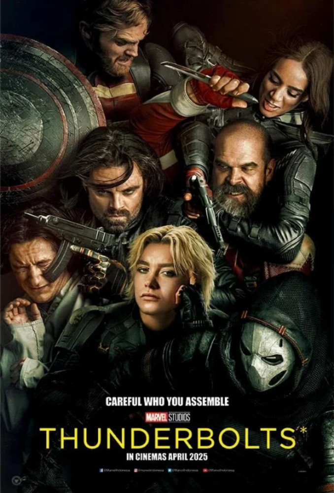

Rp 0
Aryo akhirnya ikut menonton film bersama teman-teman. Seru sih, tapi semua uang jajannya ludes demi tiket dan camilan.
“Dompetku kosong… tapi filmnya keren banget! Besok harus mulai nabung lagi, deh.”

NEXT